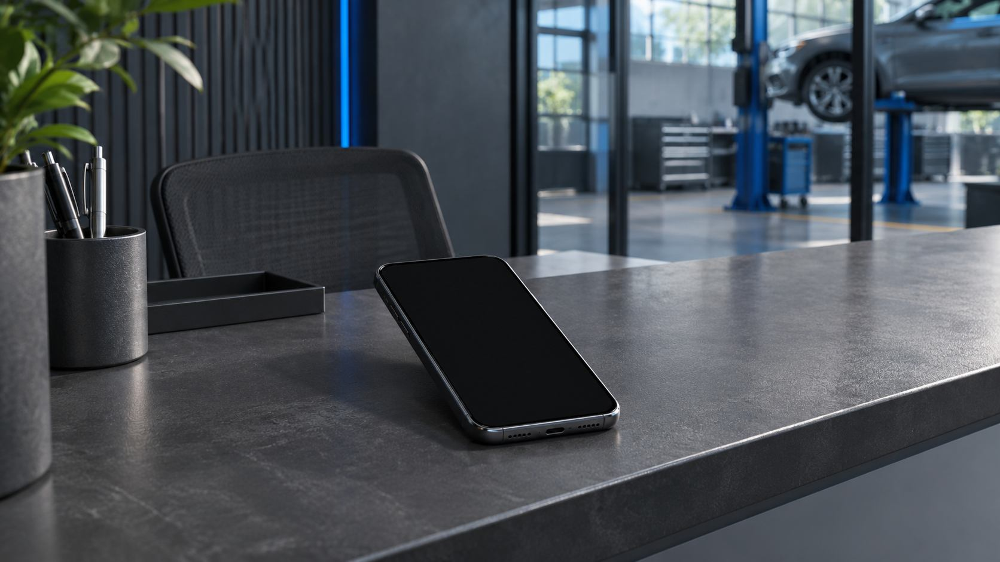
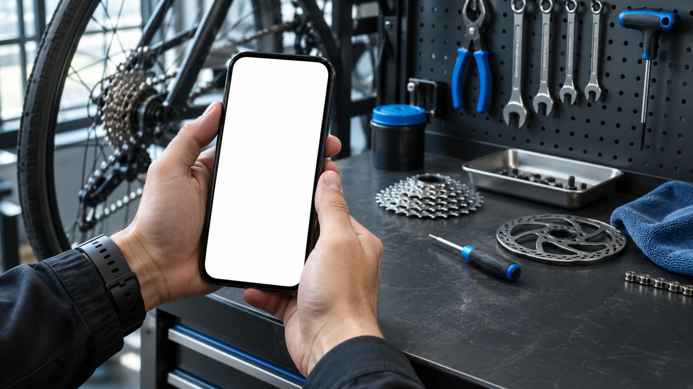
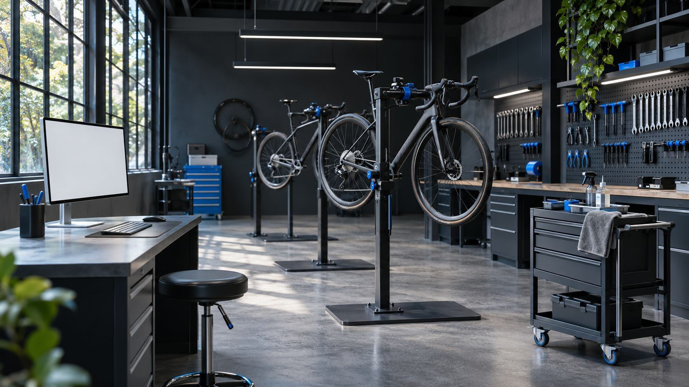

Спроектировали короткий путь
Услуга, время, подтверждение — без лишних анкет.
Велосипедная мастерская / кейс-концепт

Диагностика велосипеда · 12 ноября
Выберите время. Это демонстрация, запись не отправляется.
Клиент спрашивает о свободном времени в переписке. Администратор уточняет услугу и вручную записывает визит. Показываем мини-приложение, в котором человек выбирает работу, свободное время и оставляет контакт, оставаясь в привычном мессенджере.
Услуга, время, подтверждение — без лишних анкет.
Показали занятые интервалы и проверку доступности перед записью.
Клиент может отменить визит, администратор — закрыть время.
Описали согласие на обработку данных, права и тестовые сценарии.


Сценарий записи, экран администратора и уведомление о визите. Для концепта выбран Telegram; версия VK оценивается отдельно.
В концепте показан предполагаемый состав результата, а не завершённый клиентский проект.Обсуждение задачи → структура и прототип → сборка → проверка и передача.
Срок после согласования сценария. Точный состав, календарь и условия фиксируем перед началом работ.
Посмотреть похожий концептИтог зависит от объёма, материалов и интеграций.